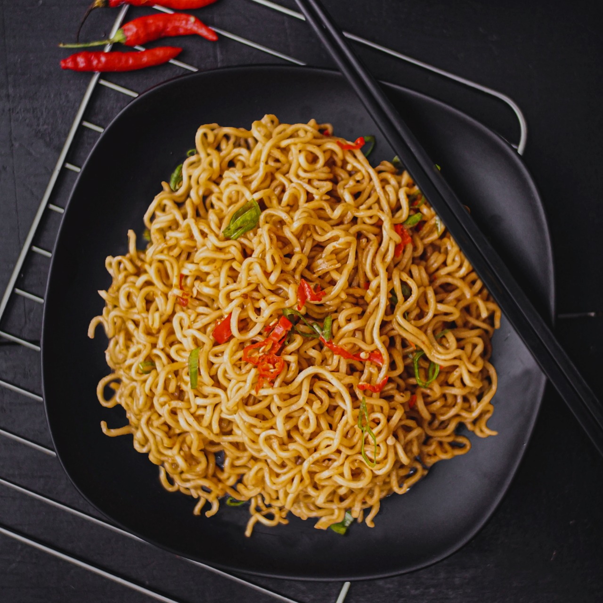

Veg Noodles

Description
Recipe for an easy and simple vegetable-based noodles recipe made with simple plain wheat noodles.
Ingredients
- Water
- Salt, oil
- Noodles
- Clove, Garlic, Ginger
- Chilli, Onion, Carrrot
- Tomato Sauce
Steps
- Firstly, in a large vessel take 6 cup water, 1 tsp salt and 1 tsp oil.
- Once the water comes to a boil place a pack of noodles.
- Refer package instructions to know the exact cooking time.
- Drain off the water from noodles and pour 1 cup of cold water to prevent from further cooking.
- Drizzle 1 tsp oil and mix gently, to avoid noodles from sticking to each other.
- Add 2 tbsp tomato sauce, 1 tbsp soy sauce, 1 tbsp vinegar, 1 tbsp chilli sauce, ¼ tsp pepper powder and ½ tsp salt.